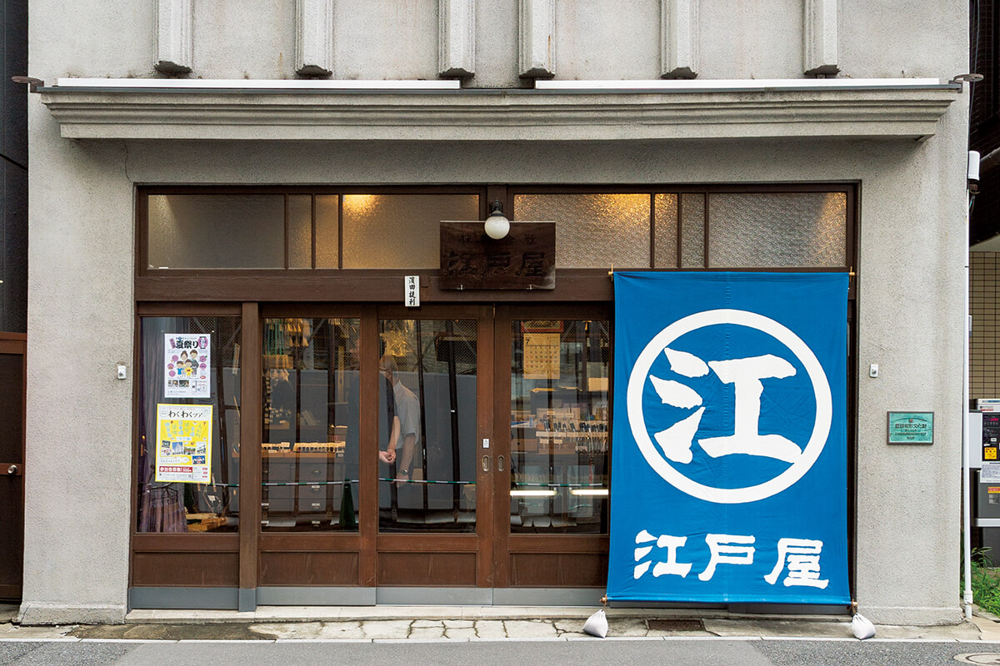
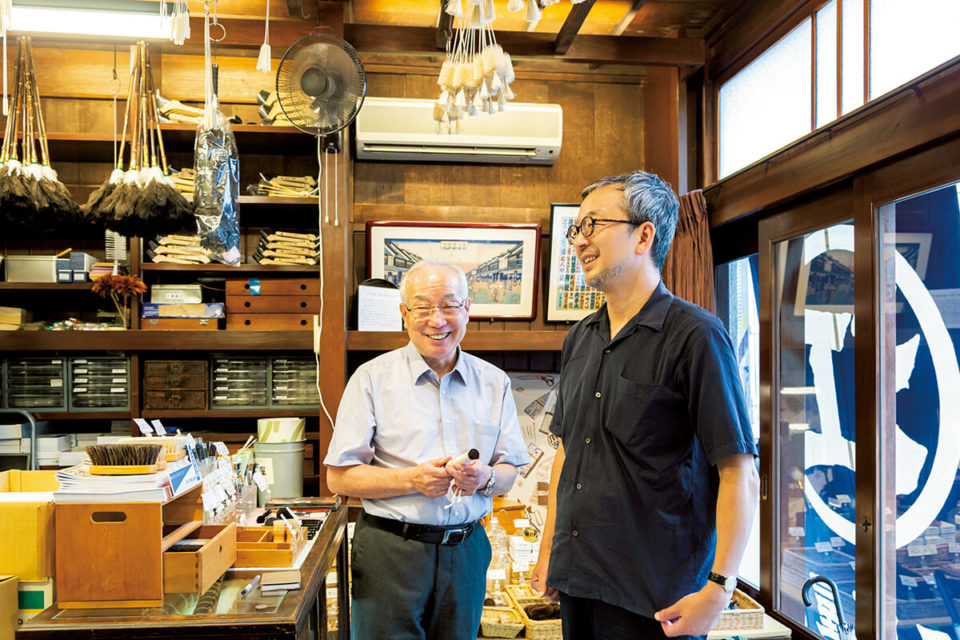
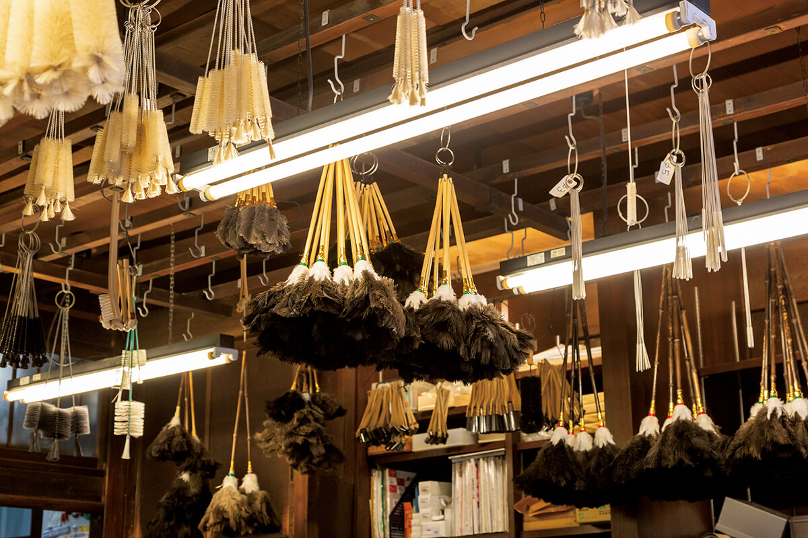
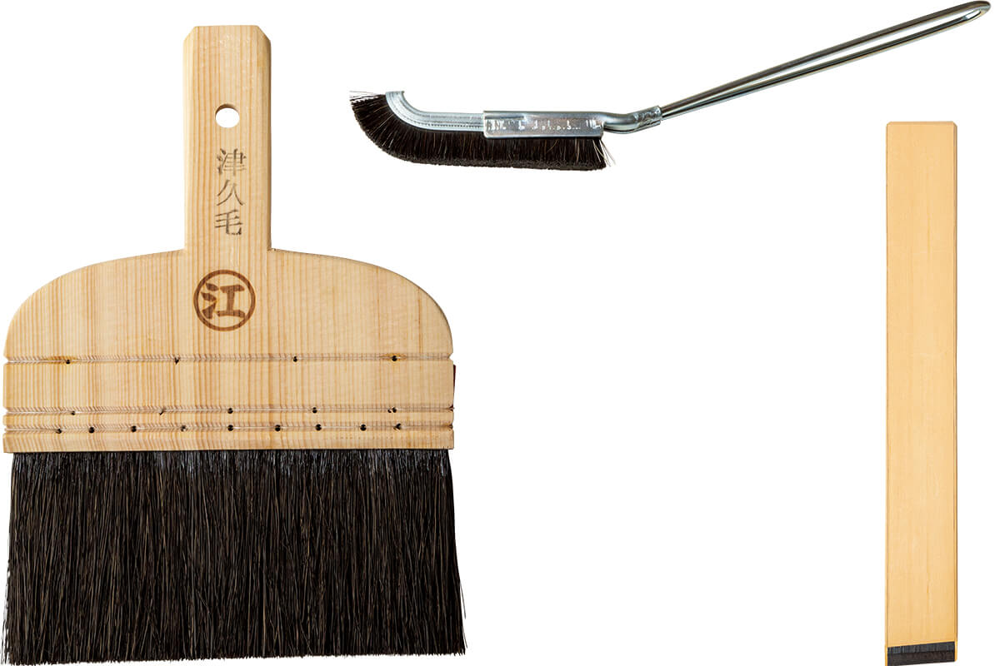

Токио · Нихонбаси · лавка кистей и щёток
«Эдоя» в Нихонбаси: лавка кистей и щёток, которой больше 300 лет

В токийском квартале Нихонбаси с 1718 года работает лавка «Эдоя», где делают и продают кисти и щётки. Под её потолком висят сотни изделий, а в витринах лежат образцы тонкой ручной работы.
Взгляд
Чтобы разглядеть, нужно отойти
Как человек видит вещь или другого человека, во многом зависит от расстояния. То, что слишком близко, легко недооценить, и японцам о красоте их собственной культуры нередко напоминают иностранцы. Укиё-э в эпоху Эдо были массовым развлечением, чем-то вроде открыток с актёрами или комиксов. Как особое японское искусство их стали ценить после того, как в XIX веке гравюры «открыли» в Европе.
Директор одного токийского магазина-галереи, который давно работает с японскими инструментами и вещами для дома, признаётся, что и с ним случилось подобное. О лавке «Эдоя» в Нихонбаси, специалисте по кистям и щёткам, он узнал от иностранца, который назвал её «удивительным магазином».

Лавка
Тысячи щёток под одной крышей
Первый визит в «Эдоя» запоминается надолго. Лавка стоит в старом здании в стиле «камбан кэнтику», где магазин и жильё хозяев под одной крышей. Внутри щётки свисают с потолка так плотно, что почти его закрывают, а в настенных витринах лежат образцы кистей такой красоты, что их легко принять за предметы искусства. Ощущение похоже на детский восторг в любимой лавочке со сладостями.

Лавку открыли в 1718 году. Её основатель был мастером кистей на службе у семьи сёгуна и получил от неё торговое имя «Эдоя». С ним он и открыл свою лавку кистей.
С тех пор кисти и щётки здесь делают из натурального ворса: свиной и конской щетины, козьей шерсти, щетины кабана. Для каждой задачи подбирают свой ворс по толщине, жёсткости и упругости. Ворс набивают вручную, и такие приёмы, как «тэуэ» и «уэкоми», держатся на чутье пальцев. Владеют ими только опытные мастера.
Время
Щётки для пушек и для электроники
Одной верности традиции мало, чтобы продержаться 300 лет. «Эдоя» доверяет старым приёмам, но всегда отвечала на то, что требовалось людям в новое время. Когда-то здесь делали щётки для пушек, стоявших на батареях Одайбы, а к 2020 году стали делать и щётки для чистки электронной техники. Узкоспециальных изделий за века набралось так много, что видов в ассортименте больше 3000.

И всё же главное здесь то, как красивы эти кисти и щётки. В их форме нет ничего лишнего: она подчинена работе и выросла из необходимости, поэтому в ней собрана сама суть дизайна. Любителям дизайна в «Эдоя» стоит зайти обязательно.
«Эдоя»
- Адрес
- Токио, Тюо, Нихонбаси-Одэмматё, 2-16
- Телефон
- +81 3-3664-5671
- Часы работы
- 9:00–17:00
- Выходные
- суббота, воскресенье, праздники
Фото: Манами Такахаси.